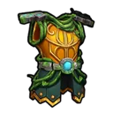

Armadura do Guerreiro Perdido
Armadura pesada · Tier 12 · Nível 37
As vinhas presas a essa armadura têm centenas de anos, embora a armadura em si pareça novinha em folha...
Atributos
Defesa
400
Crítico
5%
Economia
Valor
3.000.000
Tempo de fabricação
1d
XP do comerciante
255.000
Trabalhadores: Ferreiro 30, Mestre 26, Alfaiate 23
Receita


Marcos do projeto
6
Tempo de fabricação -20%
14
-61 Ferro
26
Valor +25%
40
-25 Aço
60
Chance de qualidade +1